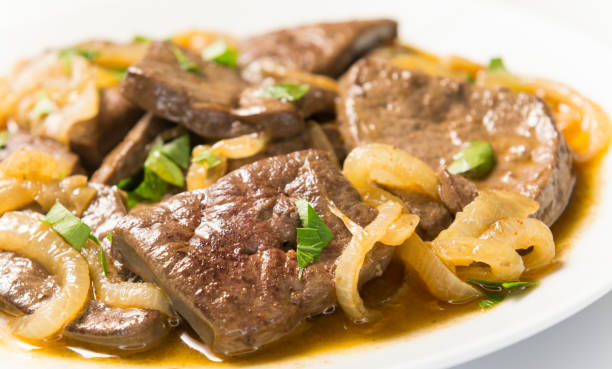

Liver and Onions

Description
Liver and onions is easy and taste delicious if it is cooked correctly.
Ingrediants
- Beef livers
- One medium yellow onion
- Salt and pepper
Steps
- Saute onions on med-high heat. Season with salt and pepper until onions are translusant.
- Set cooked onions aside in a seperate dish.
- Cook and season liver with salt and peper. Do not over cook meat, it should be medium.
- Serve immediately with onions placed over the top or on the side.